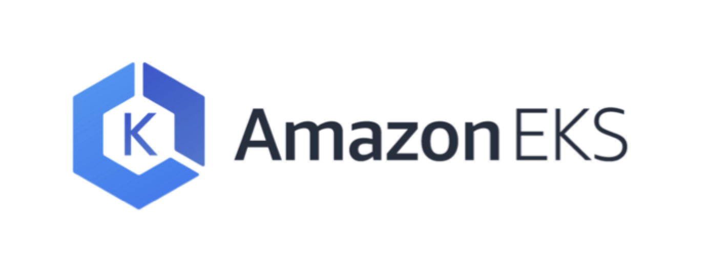
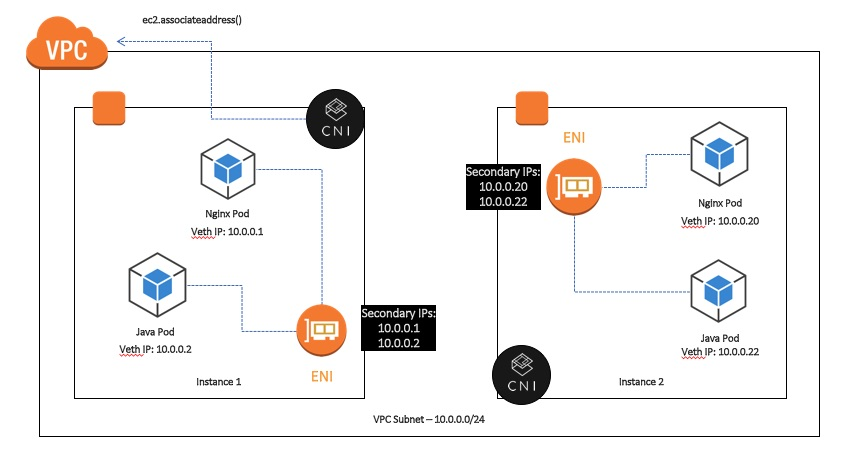

前言
最近大量使用了 AWS 的 EKS ，並且也 migrate 了一些 workload 到 EKS 上面，為了更深入了解 EKS 也找了些文章和影片來看，所以就有了這篇筆記。相關的影片和文章我會列在下面的 Reference。
為什麼需要 EKS
最主要是為了改善維護及升級 k8s cluster 的困難度，一般來說，自己維護的 k8s cluster 必需要很注意 master 的穩定性，而其他痛苦的地方像是升級 kubernetes version (master node)，etcd 的升級，etcd 的備份和還原，另外還有些問題像是有些人忘了更新 certificate ，超過了過期時間後，連不進 master node 的意外。所以在沒有一定大小程度的 kubernetes operation 團隊下，其實蠻推薦大家使用 managed k8s 像是 EKS, GKE, AKS 等等的 solution ，減少其心智負擔。
使用 EKS 的好處
- EKS master node HA
- 自動升級 Kubernetes 版本
- 整合了 IAM user & IAM role w/ kubernetes RBAC，基本上可以控管每個 AWS 的 IAM user 的權限，規範 kubernetes 裡面的那些 namespace 或是 operation 可以被使用
- 原生使用 AWS VPC CNI 改善了 flannel 網路的效能，另外 AWS VPC flowlog 才能夠有作用，看得懂 packet 的流向
- 可以使用 EC2 IAM role ，解決了跟 AWS managed service 的整合問題
- EKS 會自動備份監控 etcd
- 可以使用 Cloudtrail audit EKS API
一些技術細節
- Master node 會被啟在 AWS 自己特殊的 VPC 內，且受 AWS 控制，所以不會佔用我們的 IP 數量
- Master node 和 worker node 之間用 private link 連結，走的是內部網路，所以效率上面不太需要擔心，Master node 前面有 Loadbalacer，猜想後面的 Master node 有問題或是需要 scale 的時候，使用的是 AWS 自己的 scale 方法，增加 Master node 的穩定度。
AWS VPC CNI

這算是蠻重要的一環，原本的 kubernetes 的網路架構使用的是 flannel ，但是其實 packet 在流動的過程中，被轉址了很多次，而 AWS VPC CNI 就是為了解決 network performance 的問題。
- 每個 ENI 可以有數個 IP addresses，AWS VPC CNI 會負責 collect 這些 IP 將其分配到 ENI 上面
- 可以從 EC2 上面看到 2nd IP 的數量會增加
- 一個 pod 會佔用一組 IP
- 每個 Instance family 可以使用的 IP 數量有限，這點需要注意，有聽到人先遇到了 IP 數量不足的問題，而不是先遇到 CPU or Mem 不足。
iptable 問題
- 處理 5000 services == 40000 rules 需要 11mins
- 處理 20000 services == 160000 rules == 5 hours
在跑大量 service 時會有問題
1.11 後會有 IPVS mode，不過還是要考量一下是否要使用，基本上 iptable 的功能還是比較強大
ingress
- 可以使用 annotations 配置 ELB & NLB
- 可以設定的東西有
- Draining
- Logging
- SSL Certs
- Tagging
- Security Groups
- Health Checks
- ALB ingress 需要另外安裝
Network policy
- pod 與 pod 之間的 network 可以使用 Calico 的 Network Policy 去配置
Auto scaling
- 最新版的 eks.2 已經有支援 Horizontal Pod Autoscaler
- Worker Node scale 可以使用 Auto scaling group 來做
- Master Node 由 AWS 負責
Limitation
- 目前只有三個 region 有支援 US west (Oregon) & Virginia & Ireland
Troubleshooting
需要注意 security group 是否設定正確
- master node <-> worker node
- worker node <-> worker node
- LB <-> worker node
- worker node <-> other EC2 instances or managed services
VPC 內的 ip 數量是否足夠
- ENI 的 ip 數量是不是已經達到上限
- worker node 上面的 IAM role 的權限是否充足
Pricing
- $0.20 per hour per cluster ($144 per month)
- worker node resource 都跟 AWS 原本的價錢一樣
推薦的安裝方式
除了使用 eksctl 來建立 EKS 外，也可以使用 Pahud 大寫的 https://github.com/pahud/amazon-eks-workshop 來創建和操作 EKS，而 Pahud 大的 workshop 還包含了許多其他的東西像是 ingress 和 HPA 的創建，非常值得大家一讀。
Reference
- https://aws.amazon.com/blogs/opensource/networking-foundation-eks-aws-cni-calico/
- https://www.youtube.com/watch?v=4ClszrpJQq8&t=1631s
- https://www.slideshare.net/sriram_rajan/elastic-kubernetes-services-eks?qid=e09780e3-f5b4-478c-90fd-9b74bcf02c6d&v=&b=&from_search=6